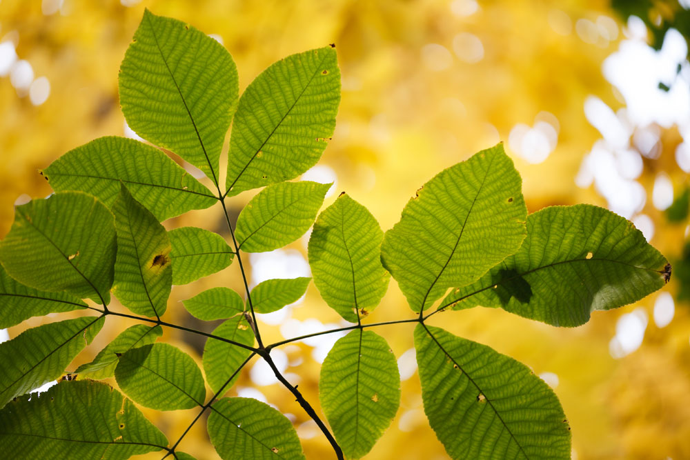
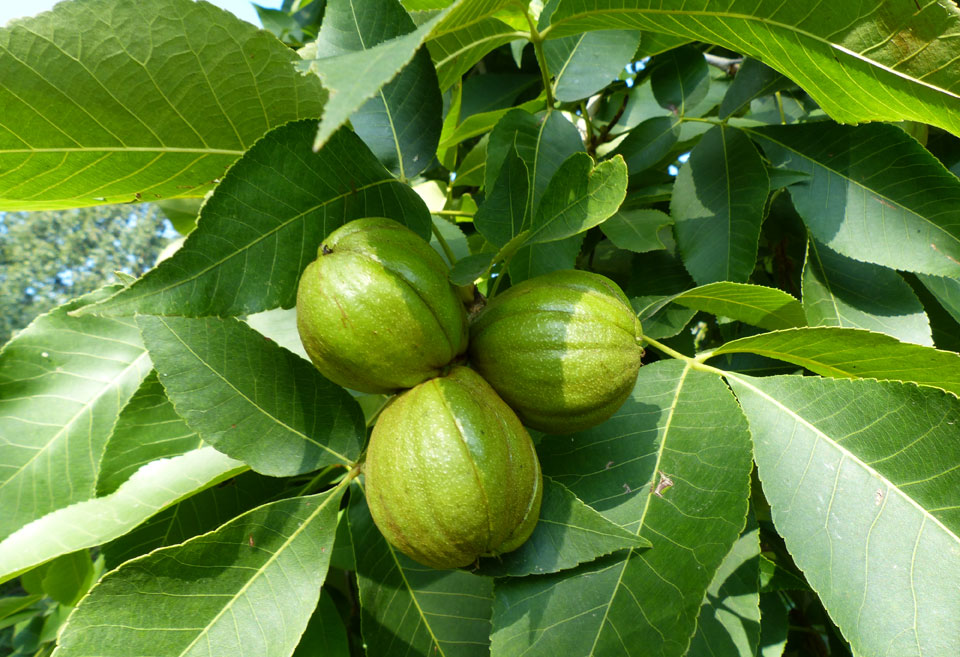
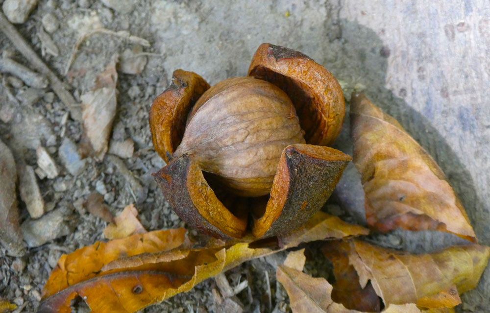

Hickory nuts are one of nature’s greatest hidden treats and are definitely worth the trouble to crack open. The thick husk protects the nut’s rich, sweet, calorie-dense pecan-flavored interior. Just one nut can contain almost 200 calories, and it makes a delicious, energy-boosting snack on the trail or a survival food in the wilderness.
Hickory nuts can be eaten immediately, right out of the shell, or stored in a cool, dry place for many months. Pawcohiccora is a Native American porridge made out of the nuts of shagbark hickory trees and is where the word hickory originates.

Hickory nuts start falling to the ground in the autumn all over the United States. There are over a dozen species of the hickory tree, which include walnuts and pecans. Many share similar characteristics, including leaf structure, trunk shape, and average height. While most of the nuts that fall off hickory trees are safe to eat, some are inedible. Knowing which trees produce edible nuts is an essential skill to have, especially if you spend time exploring and foraging outdoors.
WHAT TO LOOK FOR WHEN PICKING HICKORY NUTS
There are many nut trees in the forest, and it is crucial to make sure what you are touching and eating is not poisonous. The trees of the genus Carya are deciduous hardwood trees that grow all over North America and parts of Asia.
They have narrow leaves that are characterized by their serrated edges growing from every stem. While some may be more rounded than others, most hickory leaves are between 2-8 inches long. The leaves grow off the stalk in pairs, between 2-9 leaves on the sides and one leaf at the end.
The nuts have a double shell. They have fibrous outer husks that peel off to reveal nutshells below, and delicious nut meat inside. It is important not to mistake other nuts with double shells for hickory nuts, as some are poisonous. Some poisonous nuts, such as buckeye nuts, have similar shells, but the nut meat is different. Hickory nuts have partitioned inner nutshells, similar to a walnut, whereas the buckeye nut looks more like an almond.
DIFFERENT SPECIES OF HICKORY NUTS
There are several kinds of hickory nuts, all of which look and taste a little different.
SOUTHERN SHAGBARK

Southern shagbark hickory or Carya caronlinae septentrionalis, grows in limestone soils and produces round fruit that is about 1-2 inches wide. Covered in a thick dark husk, the shagbark hickory nuts are sweet. Toast them lightly over a campfire to make the fruitiness disappear and to bring out a more robust crunchier flavor.
BITTERNUT HICKORY
Bitternut hickory, or Carya cordiformis, grows in dense, wet forests and produces smaller fruit, growing from less than an inch to 1.6 inches long. The husk is thin and dark, and the fruit is quite bitter. While not poisonous, they are best left for the squirrels and other wildlife, given their unpleasant taste.
PIGNUT HICKORY
Pignut hickory or Carya glabra grows on ridges and produces thin-husked light brown fruit. Pignuts are round and about an inch wide and resemble a pig’s nose. The fruit of the pignut hickory can be eaten, but it is astringent and quite bitter. If you are foraging hickory to use in homemade recipes, pignut hickory can also be candied or ground into a powder to use in baking, which eliminates the bitter taste.
SHELLBARK HICKORY
Shellbark hickory or Carya laciniosa grows in wet forests. Also called kingnut hickory, it produces the largest nut of all the hickory species. Its fruit can be 1.5-inches wide. The fruit of the Shellbark is sweet, covered by a thick dark-brown husk.
RED HICKORY
Red hickory or Carya ovalis grows on slopes and ridges. Red hickory nuts are round and about 1-inch wide. They have thick dark-brown husks and produce sweet fruit that can be eaten raw.
SANDNUT HICKORY
Sand hickory or Carya palida grows in dry areas and produces the smallest nuts, measuring between half an inch to an inch and a half. They have thin husks and light-brown shells and produce sweet fruit that can be used as a substitute for pecans or walnuts in a variety of sweet and savory recipes.
MOCKERNUT HICKORY
Mockernut hickory or Carya tomentosa also grows in dry areas, mostly on slopes and ridges. The mockernut fruit is relatively small to other hickory nut species, at only 1.5-2 inches, and it has a thick dark-brown husk. The fruit of the Mockernut hickory is sweet, but brining and baking the nuts transforms them into a savory, salty snack.

CRACKING AND CURING HICKORY NUTS
Hickory nuts that are ready to be eaten usually fall right off the trees, making it easy to pick ripe ones. Most of the time, the husks will crack open as well, making it easier for you to get to the fruit. Once you have foraged the nuts, remove and discard the husks.
Next, inspect the nuts for weevils or bugs that may have buried themselves inside and eaten the nut meat. Discard nuts with boreholes in them, as there likely is no fruit in the nut.
The shells of hickory nuts can be opened with a nutcracker used for walnuts. You can also use a vise, a hammer, or a rock to force the shell open. You can run over black walnuts with a car; they are that hard. A vise can be tightened until the shell breaks, and it will likely not damage the fruit.
If you are foraging hickory nuts to eat in the wild, a rock or the butt of your survival knife is the ideal tool to open the shell without damaging the fruit. Place the nut on a hard, flat surface, such as a stump or rock, and hit the shell until it cracks. Then use the blade to pry the shell open further.
Once you have cracked open the nut, pick out the fruit with the tip of a knife, and it is ready to eat. Depending on the type of nut, you’ll get a different level of sweetness. You can also store the nuts in an airtight container for months or freeze them for up to a year.